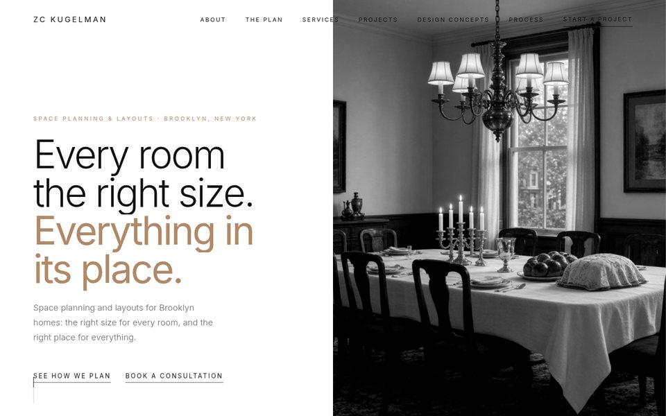
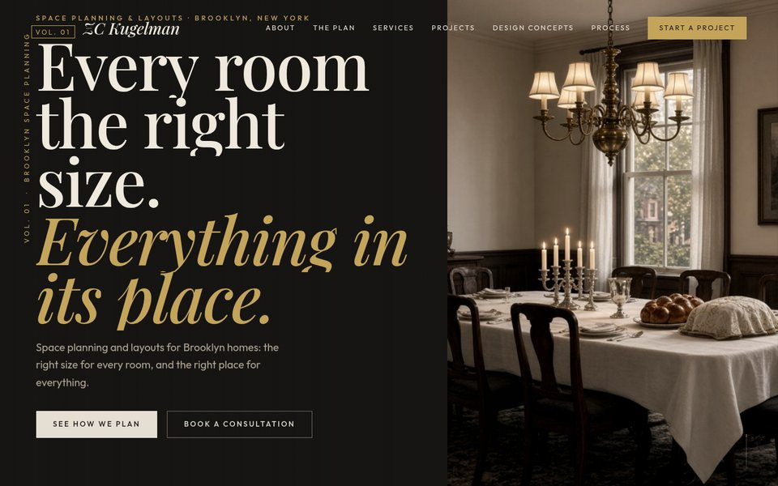
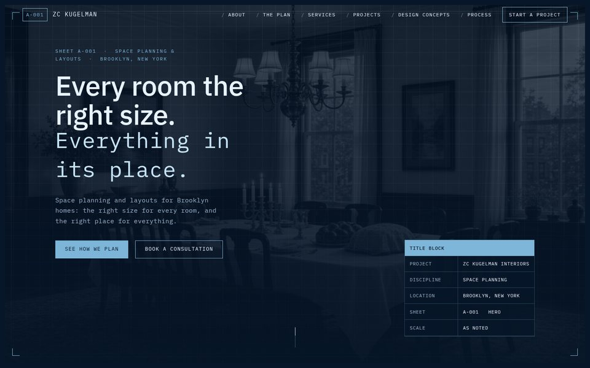
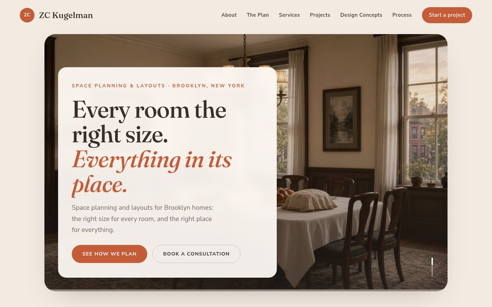
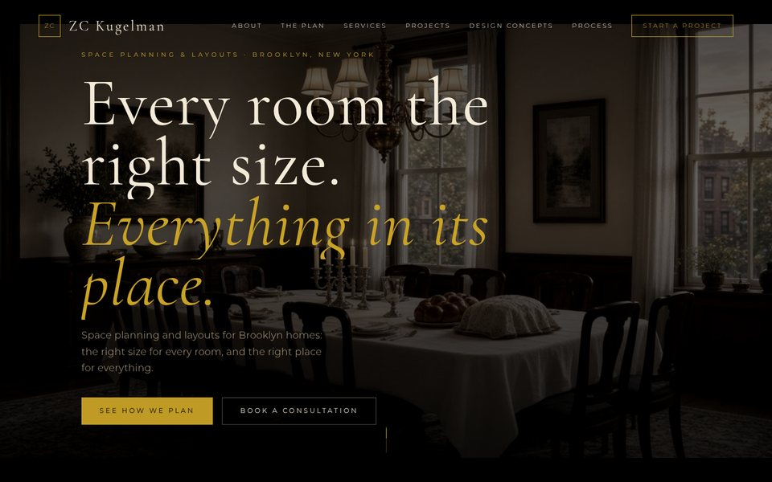
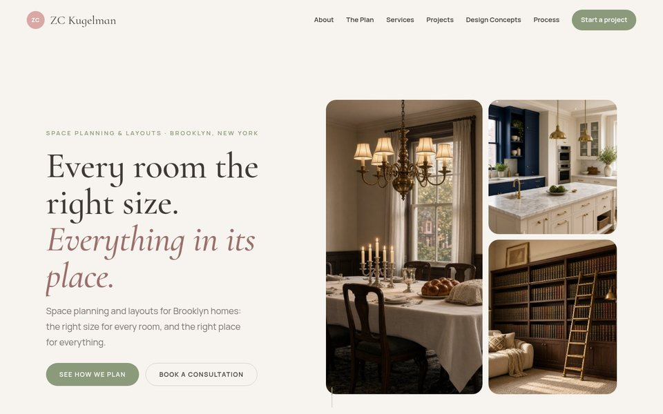
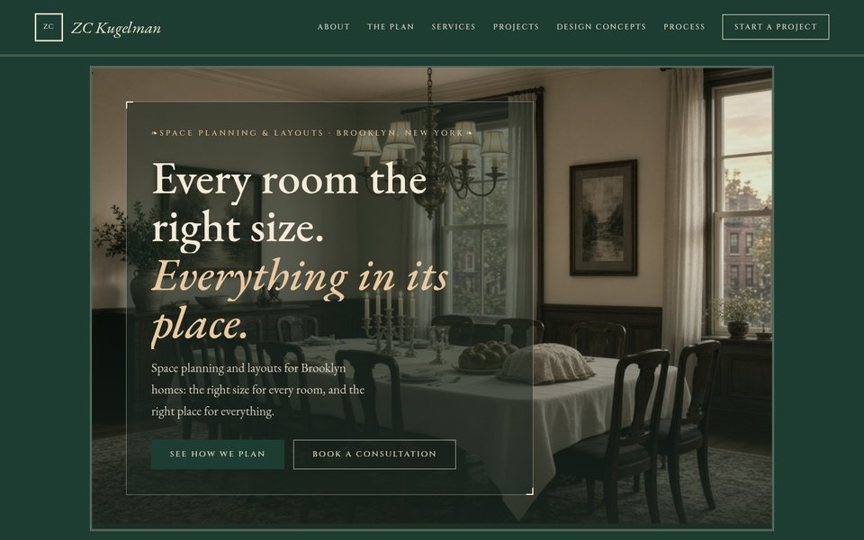
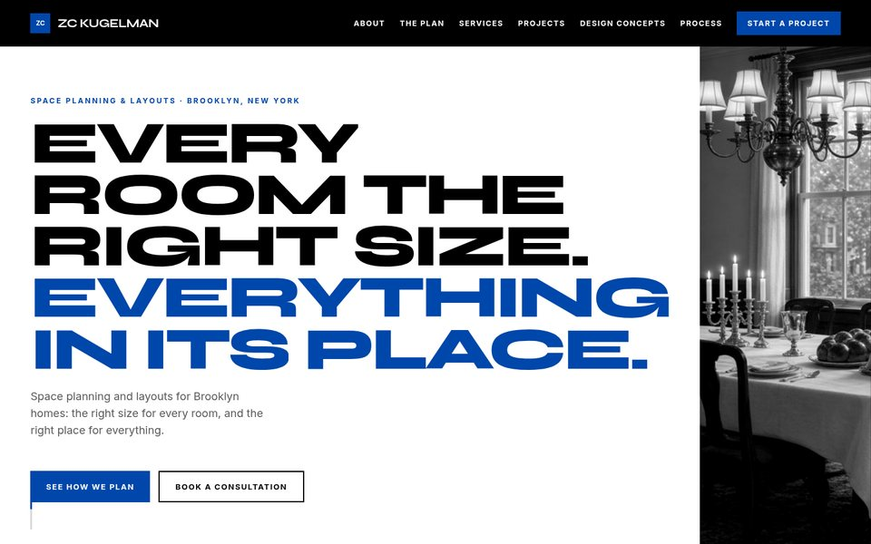

ZC Kugelman Interiors
Same content, photos and animations — four original directions and four new ones. Open any option to preview it.

Option 01
White, thin sans type, black-and-white photos, and an oak accent.

Option 02
Magazine-style serif headlines, an asymmetric grid, charcoal and brass.

Option 03
Navy and white, grid lines, a title block, and technical monospace.

Option 04
Soft beige and terracotta, rounded cards, and a friendly tone.

Option 05
Near-black and gold, with cinematic full-screen sections.

Option 06
Sage and blush, airy spacing, and a photo-first masonry layout.

Option 07
Brooklyn heritage: deep green, burgundy, and an ornamental serif.

Option 08
Bold two-column layouts, black and white, and a vivid cobalt accent.